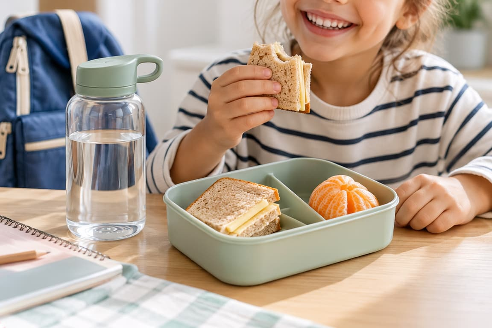

VUELTA AL COLE: MERIENDAS Y HÁBITOS DE HIGIENE DENTAL EN NIÑOS

No nos podéis engañar. Las mamás y los papás estábamos deseando que llegara. ¡Bienvenido septiembre! Bienvenida la rutina y el cole. Septiembre ya está aquí, con sus mochilas, sus libros nuevos, los horarios que vuelven a cuadrar… y la eterna pregunta de todas las mañanas: «¿Qué le pongo hoy de merienda para el cole?».
Porque sí, preparar una merienda para el colegio puede convertirse en un pequeño máster en logística. Que le guste, que sea fácil de llevar, que no acabe aplastada dentro de la mochila y, si puede ser, que también sea saludable. Y aquí hay otro ingrediente que muchas veces dejamos en segundo plano: la salud de sus dientes.
La vuelta al cole es un buen momento para recuperar rutinas. Horarios más ordenados, comidas más estructuradas, cepillado de dientes más constante y, por supuesto, una revisión de cómo está la boca de nuestros hijos.
No se trata de prohibir todos los alimentos que llevan azúcar ni de convertir la merienda en un momento de tensión. Se trata de entender qué alimentos favorecen la aparición de caries, con qué frecuencia los toman y cómo podemos organizar una rutina de higiene bucal infantil que puedan mantener durante todo el curso.
¿Por qué la vuelta al cole es un buen momento para revisar los hábitos de salud bucal de los niños?
Septiembre funciona como una especie de botón de «reinicio». Después del verano, los horarios vuelven a estabilizarse y recuperamos muchas de las rutinas que durante las vacaciones se han relajado. Y sí, ¡damos las gracias por ello! (¿Podemos empezar el año que viene con la rutina en agosto? Por favor y gracias).
No pasa absolutamente nada porque durante el verano haya habido más helados, más comidas fuera de casa o algún que otro día en el que el cepillado se haya hecho con menos entusiasmo. El problema aparece cuando esas excepciones dejan de ser excepciones y se convierten en la rutina habitual.
La vuelta al cole puede ser un buen momento para revisar tres cuestiones muy sencillas:
- Qué está tomando el niño entre horas.
- Con qué frecuencia se cepilla los dientes y cómo lo hace.
- Cuándo fue su última revisión con el dentista infantil.
Además, una revisión no consiste únicamente en buscar caries. En una consulta de odontopediatría también podemos controlar cómo están saliendo los dientes, cómo evoluciona la mordida, el estado de las encías, el esmalte y determinados hábitos que pueden influir en el desarrollo de la boca.
Y aquí está una de las cosas que más nos gusta explicar a las familias (sobre todo a María García): que un niño no tenga dolor no significa necesariamente que todo esté perfecto. Para muestra, este artículo que subimos hace un tiempo: ‘Caries entre los dientes: cómo detectarlas antes de que duelan’.
Las caries, por ejemplo, pueden comenzar sin producir molestias. Y algunos cambios en la mordida o en la erupción de los dientes tampoco tienen por qué dar señales que los padres puedan detectar en casa. Por eso septiembre no es solo el mes de comprar zapatillas nuevas. También puede ser un buen momento para poner la boca a punto para el curso.
¿Qué meriendas para el colegio son mejores para cuidar los dientes?
Mamás, papás: no nos volvamos locos. ¡Quítate el estrés de las meriendas del cole! Y piensa que no existe una única «merienda perfecta» ni hace falta que todas las meriendas sean aburridas para que sean saludables. La clave está en priorizar alimentos poco procesados, reducir la frecuencia de exposición a azúcares y evitar que el niño esté picoteando constantemente durante horas.
Entre las opciones que pueden formar parte de unas meriendas para el colegio equilibradas encontramos alimentos como fruta entera, lácteos naturales sin azúcares añadidos o frutos secos, siempre teniendo en cuenta la edad del niño y las recomendaciones de seguridad alimentaria correspondientes.
También es importante diferenciar entre comer un alimento y estar consumiéndolo a pequeños sorbos o bocados durante mucho tiempo. Desde el punto de vista dental, la frecuencia con la que los dientes están expuestos a determinados azúcares y ácidos también importa. Por eso, más que entrar en una guerra contra un alimento concreto, podemos fijarnos en el conjunto de la merienda.
Algunas ideas sencillas:
- Fruta entera en lugar de productos con azúcares añadidos.
- Yogur natural o lácteos sin azúcar añadido.
- Frutos secos en niños que ya tengan edad y capacidad para consumirlos de forma segura.
- Un bocadillo sencillo con ingredientes poco procesados.
- Agua como bebida habitual.
Y una pequeña aclaración: que un alimento sea «saludable» no significa automáticamente que sea neutro para los dientes. «¿Qué dices?» Pues que por ejemplo, tomar fruta entera y beber zumos de fruta no es exactamente lo mismo. En el zumo se pierde parte de la estructura de la fruta y además es mucho más fácil consumir una cantidad considerable de azúcar en poco tiempo. ¡Pero ojo! Tampoco hace falta demonizar los zumos, los batidos o ese alimento que el niño pide constantemente. Lo importante es que no sean la base de la alimentación diaria y que exista una rutina de higiene adecuada.
Porque bastante complicado es ya conseguir que se ponga los zapatos correctos antes de salir de casa como para añadir una crisis familiar por una mandarina.
5 MERIENDAS PARA EL COLE QUE TE SOLUCIONAN LA SEMANA.
| Día | Menú de merienda | Bebida | ¿Por qué nos gusta esta opción? |
|---|---|---|---|
| Lunes | Bocadillo pequeño de queso + mandarina | Agua | Combina un bocadillo sencillo con fruta entera y evita empezar la semana recurriendo a bollería, galletas o zumos. |
| Martes | Yogur natural sin azúcar añadido + plátano | Agua | Una opción sencilla que combina un lácteo natural con fruta entera. Fácil de preparar y sin necesidad de añadir productos azucarados. |
| Miércoles | Manzana en trozos + un puñado de frutos secos naturales | Agua | Una merienda muy fácil de transportar basada en alimentos poco procesados. |
| Jueves | Bocadillo pequeño de jamón cocido o queso + pera | Agua | Volvemos a una combinación muy práctica: bocadillo sencillo + fruta entera. Perfecta para días en los que necesitan algo más consistente. |
| Viernes | Yogur natural sin azúcar añadido + fruta entera de temporada | Agua | Cerramos la semana con una opción que permite ir variando según la fruta disponible y evita convertir el viernes en sinónimo de merienda azucarada. |
¿Qué alimentos pueden dañar más los dientes de los niños?
Cuando hablamos de alimentos que dañan los dientes, solemos pensar inmediatamente en chucherías (¡cuidado, que tenemos Halloween a la vuelta de la esquina!) Y sí, los productos con alto contenido en azúcares pueden favorecer la aparición de caries, pero la historia es un poquito más amplia.
El problema no está únicamente en qué toma el niño, sino también en con qué frecuencia lo toma. Los caramelos, galletas, bollería, cereales muy azucarados, chocolates, bebidas azucaradas, zumos y otros productos similares pueden aportar azúcares que las bacterias presentes en la placa dental utilizan para producir ácidos capaces de dañar el esmalte.
Por eso conviene prestar especial atención al picoteo continuo. No es lo mismo que un niño tome una merienda y después vuelva a su rutina que estar toda la tarde comiendo pequeñas cantidades de productos azucarados.
Algunos hábitos que podemos intentar reducir son:
- Picar alimentos azucarados varias veces a lo largo de la tarde.
- Tomar bebidas azucaradas de manera habitual.
- Sustituir el agua constantemente por zumos o refrescos.
- Tomar alimentos pegajosos y azucarados que permanecen más tiempo adheridos a los dientes.
- Acostumbrarse a comer algo justo antes de dormir después de haberse cepillado.
Esto no significa que un niño no pueda comer una galleta en su vida. La salud bucodental no funciona con una lista de alimentos «prohibidos». Funciona mucho mejor con buenos hábitos mantenidos en el tiempo.
¿Cuántas veces al día deben lavarse los dientes los niños?
Como norma general, los niños deben cepillarse los dientes al menos dos veces al día, utilizando pasta dental fluorada adecuada a su edad y siguiendo las recomendaciones de su profesional. Uno de esos cepillados debería ser el de la noche. Y aquí sí que somos bastante pesadas: el cepillado nocturno es importantísimo.
¿Por qué? Porque durante la noche disminuye el flujo de saliva y, mientras dormimos, los dientes pasan muchas horas en contacto con el entorno de la boca. Si nos vamos a la cama después de haber dejado restos de comida y placa sin limpiar, no estamos precisamente preparando el mejor escenario.
Además, dependiendo de la edad y de la destreza del niño, no podemos esperar que se cepille perfectamente solo. Los más pequeños necesitan supervisión y ayuda. Incluso cuando ya saben manejar el cepillo, conviene revisar cómo lo están haciendo y asegurarnos de que llegan a todas las superficies.
Una buena rutina puede ser muy sencilla:
Mañana: cepillado después del desayuno cuando sea posible según la rutina familiar y escolar.
Noche: cepillado completo antes de dormir.
Entre medias: evitar el picoteo constante y mantener el agua como bebida habitual.
Y algo importante: dos minutos de cepillado no significan dos minutos de mover el cepillo de cualquier manera. La técnica importa.
¿Hay que cepillarse los dientes después de comer en el colegio?
Esta es una duda bastante habitual, especialmente cuando hablamos de niños que comen o meriendan fuera de casa. No siempre es necesario que el niño se cepille los dientes después de cada comida. Lo importante es que mantenga una rutina de higiene adecuada dos veces al día y que, cuando exista una recomendación específica por parte del dentista, se adapte a sus necesidades.
En el colegio, además, no siempre es fácil organizar un cepillado después de la merienda. Puede ser más realista centrarse en una buena higiene por la mañana y, especialmente, por la noche. Si el niño lleva ortodoncia, tiene un riesgo elevado de caries o presenta alguna situación concreta, las recomendaciones pueden cambiar.
Y aquí volvemos a una idea que parece sencilla pero que funciona: mejor una rutina que podamos mantener que una rutina perfecta que abandonemos en una semana.
¿Qué papel tiene el flúor en la prevención de las caries infantiles?
El flúor es uno de los grandes aliados en la prevención de la caries porque ayuda a fortalecer el esmalte y favorece su resistencia frente a los ácidos que producen las bacterias de la placa dental. Por eso utilizamos pastas dentales fluoradas adaptadas a la edad del niño y, en determinados casos, podemos valorar medidas adicionales.
Aquí entra la fluorización dental profesional, un procedimiento que podemos realizar en clínica cuando está indicado. La fluorización consiste en aplicar un producto con una concentración de flúor determinada directamente sobre los dientes, con el objetivo de favorecer la protección del esmalte frente a la caries.
No significa que todos los niños necesiten una aplicación profesional de flúor de manera rutinaria. La indicación depende del riesgo de caries y de las características de cada paciente.
En consulta podemos valorar factores como:
- Antecedentes de caries.
- Calidad y características del esmalte.
- Hábitos de higiene.
- Alimentación.
- Edad.
- Exposición al flúor.
- Situaciones que puedan aumentar el riesgo de desarrollar caries.
Por eso, si una familia busca una clínica dental en Boadilla del Monte para niños, y nos hace esta pregunta «¿hacéis fluorización dental?», nuestra respuesta va a ser siempre: sí, pero primero queremos saber si tu hijo la necesita. La prevención también consiste en no hacer tratamientos porque sí.
¿En qué consiste la fluorización dental profesional en una clínica?
La fluorización dental profesional es un procedimiento sencillo que se realiza en clínica y que permite aplicar flúor de manera controlada sobre la superficie de los dientes.
Antes de realizarla, el profesional valora la situación del niño y determina si está indicada. Una vez realizada la aplicación, se proporcionan las recomendaciones necesarias para ese caso concreto, ya que las indicaciones posteriores pueden depender del producto utilizado y de las características del paciente.
La gran ventaja de hacerlo en clínica es precisamente esa: no se trata de aplicar flúor sin más, sino de integrarlo dentro de una estrategia preventiva personalizada. Y esto es especialmente interesante en niños que presentan un riesgo de caries mayor o determinadas características del esmalte que requieren una protección adicional.
Si tienes dudas sobre la fluorización dental, su utilidad o si puede ser recomendable para tu hijo, lo mejor es valorarlo en una revisión de odontopediatría. De hecho, hace poco subimos al Instagram de AIRAM un vídeo donde Lili lo explica perfectamente. Lo dejamos AQUÍ, lo ves, y vuelves, que aún no hemos terminado.
¿Cómo podemos conseguir que la higiene bucal infantil se convierta en una rutina?
Aquí viene la parte complicada. Porque saber que hay que cepillarse los dientes es fácil. Conseguir que un niño de cuatro años quiera hacerlo a las ocho y media de la noche cuando está cansado… eso ya es odontopediatría avanzada.
La clave es que el cepillado forme parte de una rutina predecible.
Podemos intentar:
- Cepillarnos siempre aproximadamente a las mismas horas.
- Convertir el cepillado en una actividad diaria, no en algo que se negocia cada noche.
- Dejar que el niño elija su cepillo dentro de las opciones adecuadas.
- Utilizar canciones o temporizadores para hacer más sencillo controlar el tiempo.
- Dejar que el niño se cepille primero y que después un adulto repase.
- Evitar utilizar el cepillado como castigo.
- Dar ejemplo: los niños aprenden muchísimo observando lo que hacemos los adultos.
Y sobre todo, no buscar la perfección. Habrá días en los que el cepillado sea maravilloso y otros en los que parezca que estamos intentando negociar un tratado internacional. Lo importante es mantener el hábito.
¿Qué podemos hacer en septiembre para empezar el curso cuidando mejor los dientes?
No hace falta revolucionar la vida familiar. Con unas pocas medidas podemos empezar el curso con una rutina mucho más ordenada.
- Revisar las meriendas.
Priorizar alimentos poco procesados y reducir la frecuencia de productos azucarados. - Recuperar horarios.
Intentar evitar el picoteo continuo durante toda la tarde. - Volver al cepillado constante.
Dos veces al día y con especial atención al cepillado nocturno. - Supervisar a los más pequeños.
Que cojan el cepillo no significa necesariamente que sepan utilizarlo correctamente. - Revisar cuándo fue su última visita al dentista infantil.
Si ha pasado demasiado tiempo, septiembre puede ser un buen momento para pedir cita. - Valorar el riesgo de caries.
Si existe un riesgo elevado, podemos estudiar medidas preventivas como la fluorización dental profesional.
Una última cosa: no hace falta esperar a que llegue septiembre para cuidar los dientes. Pero si septiembre sirve para volver a poner todo en su sitio, bienvenido sea. Y ya que estamos, tal vez te interese este artículo: ‘Chequeo dental infantil, la importancia de visitar al dentista al empezar el cole’.
Vuelta al cole, sí. Pero también vuelta a los buenos hábitos.
La mochila puede estar preparada, los libros forrados y el uniforme colgado. Ahora toca recuperar también las rutinas que durante el verano se han quedado un poco… de vacaciones.
Una buena higiene bucal infantil no consiste en hacer mil cosas. Consiste en cepillar correctamente, utilizar flúor de manera adecuada, cuidar la alimentación, evitar el picoteo constante y realizar revisiones periódicas.
Y cuando hablamos de meriendas para el colegio, tampoco necesitamos convertir el táper en un concurso de nutrición. Un niño puede comer algo que le gusta y seguir teniendo una boca sana. La clave está en el conjunto de sus hábitos, la frecuencia de consumo y la higiene.
En AIRAM nos gusta verlo así: la prevención empieza mucho antes de que aparezca una caries. Así que si septiembre ha llegado y estás pensando «tengo que ponerme con las rutinas de los niños», añade una más a la lista.
Revisar cómo está su boca.
Porque la mejor noticia que podemos recibir en consulta no es que hayamos solucionado un problema.
Es que hemos llegado a tiempo para evitarlo.